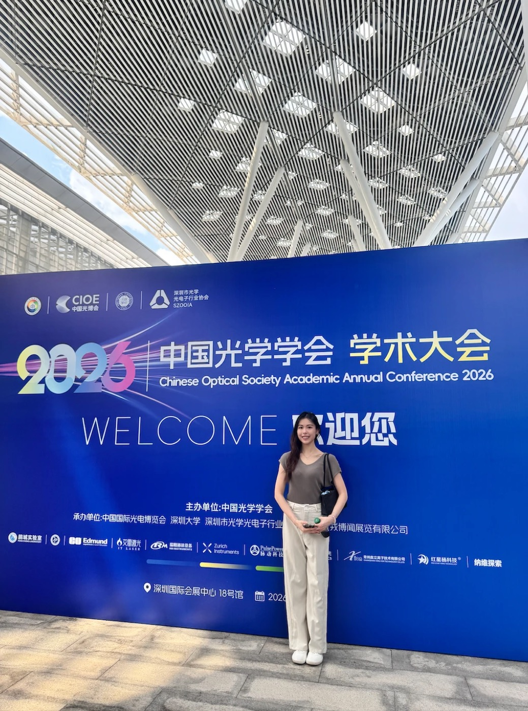
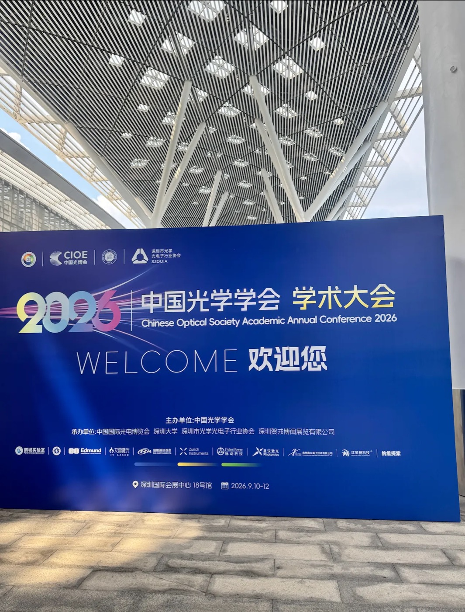
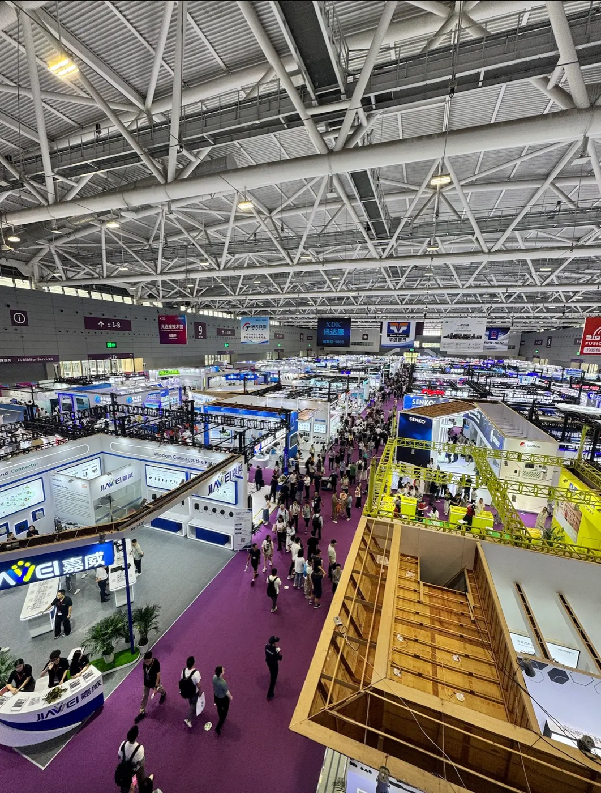

Excel Unit at CIOE 2026: cabling the AI era — data centre, factory, city
2026-09-23 · Excel Unit Technology

Notes from CIOE 中國光博會 2026 in Shenzhen — what the world's largest optoelectronics expo signals for AI data-centre cabling, why robotics and city-scale AI vision are becoming customers of the physical layer, and where Excel Unit goes next.
From 10–12 September, Shenzhen World Exhibition & Convention Center hosted CIOE 2026 (中國光博會), co-located this year with the Chinese Optical Society Academic Annual Conference — thousands of exhibitors and research groups spanning optical communication, connectors and transceivers, lasers, sensing and precision instruments. Our Sales Manager Clarisa Chan represented Excel Unit Technology on the floor with one question in mind: where is the physical layer going in the AI era — and what should a structured-cabling distributor be stocking, learning and building next?
We came back with an answer in three layers: the data centre, where AI is trained; the factory, where AI goes to work; and the city's edge, where AI watches and responds. Each one runs on a different kind of cable. All three run on cable.

1. The data centre: where AI is trained — and the fibre count is the story
Every hall told the same story from a different angle. GPU fabrics are pushing optics from 400G to 800G and onward to 1.6T; co-packaged optics has moved from concept demos to engineering samples; and connector makers were showing ever-denser MPO formats, very-small-form-factor connectors and pre-terminated assemblies designed to be landed in hours, not weeks.
The pattern we saw at the CommScope launches in Hong Kong earlier this year repeated at CIOE: the bottleneck is migrating from the electronics to the physical layer. When a single AI pod carries tens of thousands of fibre terminations, cabling stops being an afterthought — polarity, loss budgets, serviceability and delivery speed decide when the cluster lights up. That is structured-cabling discipline, and it has been our home ground since 2010.

Also notable: new fibre types are leaving the research posters. Multi-core and hollow-core fibre appeared in academic sessions and on vendor roadmaps alike — early days, but a clear signal of where latency- and density-critical links are heading.
2. The factory: robotics is a new customer for the physical layer
The second theme surprised us with its scale. Machine vision, LiDAR, fibre sensing and industrial automation filled entire sections of the show. Look inside a modern robot cell and you find, in effect, a small moving data centre: high-bandwidth camera links, sensor buses and control loops that cannot tolerate interference — all running over cable that must survive motion, bending and electrical noise that no office riser ever sees.
The requirements are different — flex-rated assemblies, hybrid power-plus-data constructions, ruggedised connectors — but the underlying need is the one we have served for fifteen years: a dependable physical medium to move the signal. New applications don't remove the cable; they demand a new kind of cable.
3. The city's edge: AI is getting eyes — and every eye is a cabled endpoint
The third layer runs through everything from traffic management to retail analytics: intelligent video and sensing networks. AI-capable cameras, LiDAR units and environmental sensors were everywhere at CIOE — and behind every one of them sits an infrastructure fact that rarely makes the keynote: each AI endpoint is a powered network drop.
A modern vision endpoint draws Power over Ethernet — up to 90 W under IEEE 802.3bt — over Cat6A that carries power and data together to 100 metres; past that, fibre takes over. Those links aggregate into edge compute nodes — small equipment rooms and cabinets in risers, plant rooms and street furniture, running inference locally because latency and privacy keep pushing AI compute closer to where the data is born. Multiply that by a mall, an airport terminal, a stadium or a campus, and one deployment means thousands of structured-cabling endpoints, plus the containment, cabinets, patching and grounding around them.
What this demands from the physical layer is specific: PoE power budgets and bundle heat dissipation (where Cat6A earns its keep), outdoor-rated and armoured fibre for perimeters and rooftops, proper bonding and surge protection, LSZH jackets in public buildings, and secure, ventilated edge cabinets. None of it is exotic — all of it decides whether the AI actually runs.
Here is the part we find most interesting: this layer is not new to us — only its name is. The airports, stadiums, campuses and commercial estates in our track record already operate large sensing and surveillance estates over cabling we supplied. As those estates turn intelligent, the physical layer underneath them is ours to serve — and to upgrade.
One more layer we are watching rather than claiming: the low-altitude economy. When drone corridors and vertiports scale, their ground infrastructure — fibre backhaul, powered pads, sensing grids — will need the same discipline. Early, but on our radar.
4. Our takeaway as a structured-cabling distributor
Put the three layers together and the thesis writes itself: AI is trained in the data centre, goes to work in the factory, and watches and responds in the city — and every one of those layers terminates in glass or copper that someone must specify, stock and deliver on time.
- The physical layer is the constant. Compute architectures, protocols and form factors churn every eighteen months; the need for a dependable medium to move the signal has not changed in thirty years — and did not change at CIOE.
- AI infrastructure is a distribution problem too. The difference between a cluster, a robot line or a camera estate lighting up this quarter or next is often ex-stock depth, pre-terminated accuracy and engineering support — exactly the muscles a distributor builds.
- Adjacent industries need cabling partners, not just catalogues. Robotics teams and AI-vision OEMs are optics newcomers; they need someone who speaks both connector and use case.
That is why we are deliberately evolving our position: from a network-infrastructure distributor to an AI-infrastructure solution distributor, focused on the cabling layer — the fibre, copper, connectivity and physical-layer engineering underneath AI data centres, intelligent factories, and the sensing networks of smart cities.
5. Let's co-develop the next use case
We are actively looking for partners to co-develop cabling use cases beyond classic network infrastructure — define the requirement together, prototype the assembly, then put our stockholding and logistics behind it:
- Robotics and automation companies — flex-rated and hybrid assemblies for cells, lines and AMR fleets
- Machine-vision and AI-camera OEMs — PoE and fibre connectivity kits engineered for large estates
- System integrators — edge-compute cabinet and backhaul packages for intelligent-building and city projects
- Edge-compute and telecom teams — pre-terminated fibre for distributed inference sites
- Research groups — early access to new fibre and connectivity for experimental platforms
If your application needs signal moved reliably — through a data hall, a factory floor, a robot arm or a city block — talk to us at info@excelunit.com.hk.
Planning a project? 索取報價
Distributor pricing and Hong Kong stock within 2 business hours.